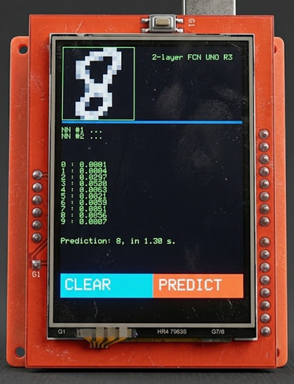

Two-Layer Fully Connected Network on ATmega328P (Arduino Uno R3)
Preface
-
*Author:
- Auralius Manurung (auralius.manurung@ieee.org)
-
Repositories:
-
Dataset:

Plan
This project demonstrates how an SD card can be used to implement a two-layer Fully Connected Network (FCN) for digit recognition on an Arduino Uno R3. The Arduino Uno R3 is based on the ATmega328P microcontroller, which has only 2 KB of SRAM. In practical applications, especially those involving a graphical user interface, the interface itself can consume a large portion of the available resources. This makes it impractical to store all intermediate activations, layer outputs, and large parameter arrays directly in SRAM.
To address this limitation, this project relies on external storage in the form of an SD card. The FCN weights and biases are stored on the SD card and streamed during inference. This allows the microcontroller to execute a simple neural network pipeline under tight embedded constraints, at the cost of longer inference time.
Hardware
- Arduino Uno R3
- 2.4 inch TFT touch display shield from MCUFRIEND
- SD card
Training
The network is designed and trained in Google Colab using the MNIST dataset. MNIST images are originally 28 × 28 pixels. To fit the memory constraints of the Arduino Uno R3 and to keep the FCN input size small, each MNIST image is resized to 16 × 16 pixels before training. This gives 256 input features. The Arduino touchscreen input is also discretized into a 16 × 16 grid, so the deployed model has the same input dimension as the training model:
16 × 16 = 256 input features
The input values are kept in the range 0 to 255. This is important because the Arduino grid is represented as byte values from 0 to 255. Therefore, the MNIST training images are not normalized to 0 to 1 for this deployment. Instead, the resized MNIST images remain in the same numerical range as the embedded input. The final network is:
256 input features -> 64 hidden neurons -> 10 output classes
A larger hidden layer, such as 128 neurons, can improve validation accuracy in Colab. However, it increases SRAM usage and nearly doubles the number of streamed weights. Since the Arduino Uno R3 has only 2 KB of SRAM, the 64-neuron hidden layer is used as the practical compromise. The following Python code shows the Keras implementation. The hidden layer uses 64 neurons.
model = Sequential([
Dense(
64,
input_shape=(256,),
activation='relu',
kernel_initializer=initializer
),
Dropout(0.3), # training only
Dense(
10,
activation='softmax',
kernel_initializer=initializer
)
], name='two-layer-fcn')
The MNIST images are resized from 28 × 28 to 16 × 16 before flattening:
X_train_img = X_train.reshape(-1, 28, 28, 1).astype("float32")
X_test_img = X_test.reshape(-1, 28, 28, 1).astype("float32")
X_train_16 = tf.image.resize(
X_train_img,
size=(16, 16),
method="bilinear"
).numpy()
X_test_16 = tf.image.resize(
X_test_img,
size=(16, 16),
method="bilinear"
).numpy()
X_train_16 = np.clip(X_train_16, 0.0, 255.0).astype("float32")
X_test_16 = np.clip(X_test_16, 0.0, 255.0).astype("float32")
X_train = X_train_16.reshape(-1, 256)
X_test = X_test_16.reshape(-1, 256)
Spatial Normalization
A key issue in deploying an MNIST-trained model to a touchscreen interface is that MNIST is not simply a 28 × 28 image collection. The digit is also spatially normalized inside the image frame. In MNIST, the digit is typically centered using a center-of-mass style normalization and scaled so that the main digit content occupies approximately a 20 × 20 region inside the 28 × 28 frame. Therefore, the Arduino preprocessing should not simply stretch the drawn digit to fill the full drawing area. That behavior is closer to USPS-style compact normalization. Instead, the touchscreen digit is processed using an MNIST-like rule:
content ratio = 20 / 28
For the Arduino drawing area of size L × L, the target digit content size is:
target_content = L × 20 / 28
The digit is centered using the center of mass of the drawn pixels, then scaled into this target content size. The final result is discretized into the 16 × 16 grid used by the FCN. The following code fragment shows the MNIST-style touchscreen preprocessing used before inference:
// Clear GRID before rebuilding it
for (uint16_t q = 0; q < 16 * 16; q++) {
GRID[q] = 0;
}
int32_t sum_x = 0;
int32_t sum_y = 0;
int32_t count = 0;
// Pass 1: compute center of mass of blue pixels
for (byte i = 0; i < 16; i++) {
for (byte j = 0; j < 16; j++) {
for (byte k = 0; k < L16; k++) {
for (byte l = 0; l < L16; l++) {
int16_t x = i * L16 + k;
int16_t y = j * L16 + l;
uint16_t pixel = tft.readPixel(x, y);
if (pixel == TFT_BLUE) {
sum_x += x;
sum_y += y;
count++;
}
}
}
}
}
if (count == 0) {
tft.println(F("No digit"));
return;
}
int16_t cx = (int16_t)(sum_x / count);
int16_t cy = (int16_t)(sum_y / count);
// MNIST-style scale:
// MNIST digit content is approximately 20x20 inside 28x28.
float denom = (float)ROI[5];
if (denom < 1.0f) denom = 1.0f;
float target_content = (float)L * (20.0f / 28.0f);
float s = target_content / denom;
// Pass 2: remap blue pixels around center of mass
for (byte i = 0; i < 16; i++) {
for (byte j = 0; j < 16; j++) {
for (byte k = 0; k < L16; k++) {
for (byte l = 0; l < L16; l++) {
int16_t x = i * L16 + k;
int16_t y = j * L16 + l;
uint16_t pixel = tft.readPixel(x, y);
if (pixel == TFT_BLUE) {
int16_t x_ = (int16_t)(s * (float)(x - cx) + (float)(L * 0.5f));
int16_t y_ = (int16_t)(s * (float)(y - cy) + (float)(L * 0.5f));
if ((x_ >= 0) && (x_ < L) && (y_ >= 0) && (y_ < L)) {
uint8_t gx = x_ / L16;
uint8_t gy = y_ / L16;
uint16_t idx = gy * 16 + gx;
if (GRID[idx] < 255) {
GRID[idx] = GRID[idx] + 1;
}
}
}
}
}
}
}
After the grid is constructed, it is normalized to the 0 to 255 range:
void normalize_grid() {
int16_t maxval = 0;
for (int16_t i = 0; i < 16; i++) {
for (int16_t j = 0; j < 16; j++) {
if (GRID[i * 16 + j] > maxval) {
maxval = GRID[i * 16 + j];
}
}
}
if (maxval == 0) return;
for (int16_t i = 0; i < 16; i++) {
for (int16_t j = 0; j < 16; j++) {
GRID[i * 16 + j] =
round((float)GRID[i * 16 + j] / (float)maxval * 255.0f);
}
}
}
This preprocessing makes the live touchscreen digit more consistent with the resized MNIST training images.
Parameter Export
The trained Keras model is exported using the Noodle model exporter. The exporter converts Keras dense-layer weights into the order expected by the Noodle FCN implementation. For Keras Dense layers, the weight matrix is stored as:
[input, output]
The Noodle FCN streams weights output-by-output:
for each output neuron k:
for each input neuron j:
output[k] += input[j] * weight[k][j]
Therefore, the exporter stores dense weights in output-input order:
[Dout, Din]
Internally, this corresponds to transposing the Keras dense kernel before flattening:
flat = np.float32(w.transpose().flatten())
The exported binary files are copied to the SD card.
| Layer | Input | Output | Weight file | Bias file | Location |
|---|---|---|---|---|---|
| Fully connected #1 | 256 | 64 | w01.bin |
b01.bin |
SD card |
| Fully connected #2 | 64 | 10 | w02.bin |
b02.bin |
SD card |
The expected number of float values is:
| File | Float count | Expected size |
|---|---|---|
w01.bin |
16,384 | 65,536 bytes |
b01.bin |
64 | 256 bytes |
w02.bin |
640 | 2,560 bytes |
b02.bin |
10 | 40 bytes |
The Noodle exporter supports this dense format directly. Therefore, for this FCN example, the exported files are already arranged in the order expected by noodle_fcn().
Noodle Configuration
The PlatformIO configuration should use the local Noodle development copy when testing new library changes:
[env:uno]
platform = atmelavr
board = uno
framework = arduino
monitor_speed = 115200
lib_deps =
prenticedavid/MCUFRIEND_kbv @ ^3.0.0
adafruit/Adafruit TouchScreen @ ^1.1.4
adafruit/Adafruit GFX Library @ ^1.11.10
adafruit/Adafruit BusIO @ ^1.16.1
greiman/SdFat @ ^2.2.3
symlink:///home/auralius/works/noodle
build_flags =
-D PIO_FRAMEWORK_ARDUINO_ENABLE_PROGMEM
-D NOODLE_USE_SDFAT
-D NOODLE_POOL_MODE=NOODLE_POOL_MEAN
-D NOODLE_FILE_FORMAT=1
-D NOODLE_FCN_BLOCK=8
The important flags are:
-D NOODLE_USE_SDFAT
-D NOODLE_FILE_FORMAT=1
-D NOODLE_FCN_BLOCK=8
NOODLE_USE_SDFAT selects the SdFat backend. NOODLE_FILE_FORMAT=1 selects binary float32 file I/O. NOODLE_FCN_BLOCK=8 keeps FCN buffering small enough for the 2 KB SRAM limit of the Arduino Uno R3.
A clean rebuild is recommended after changing library sources:
pio run -t clean
rm -rf .pio/libdeps/uno/Noodle
pio run
On the Uno Side
The Arduino sketch uses two FCN layers. The input is the 16 × 16 touchscreen grid, stored as 256 byte values.
FCNFile FCN1;
FCN1.weight_fn = "w01.bin";
FCN1.bias_fn = "b01.bin";
FCN1.act = ACT_RELU;
// 256 input neurons, 64 hidden neurons
uint16_t V = noodle_fcn(
GRID,
256,
64,
OUTPUT_BUFFER1,
FCN1,
progress_hnd
);
FCNFile FCN2;
FCN2.weight_fn = "w02.bin";
FCN2.bias_fn = "b02.bin";
FCN2.act = ACT_SOFTMAX;
// 10 output neurons
V = noodle_fcn(
OUTPUT_BUFFER1,
V,
10,
OUTPUT_BUFFER2,
FCN2,
progress_hnd
);
Since the MNIST training images are resized to 16 × 16 but kept in the 0 to 255 range, and the Arduino grid is also scaled to 0 to 255, the byte-input FCN should use:
output[k] += (float)input[j] * noodle_read_float(fw);
The Arduino input should not be divided by 255 unless the model was trained using normalized 0 to 1 input values.
Inference Time
The inference still depends on SD card transfer speed and the limited compute performance of the ATmega328P. The current implementation completed inference in approximately:
1.0 to 1.5 seconds
Summary
This project shows that a two-layer FCN can be executed on an Arduino Uno R3 by streaming the model parameters from an SD card. The use of binary float32 parameter files reduces file parsing overhead and makes the implementation more suitable for constrained embedded inference. The final network is:
256 input features -> 64 hidden neurons -> 10 output classes
The current approach uses MNIST resized from 28 × 28 to 16 × 16, while preserving the 0 to 255 input range. On the Arduino side, the touchscreen digit is spatially normalized using an MNIST-style center-of-mass method and a 20/28 content ratio before being discretized into the 16 × 16 grid.
This implementation demonstrates a practical SD-streamed neural network pipeline on a microcontroller with only 2 KB of SRAM.